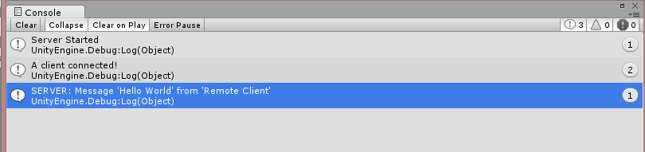

上一篇文章 中介绍了如何在 UNet 中建立网络连接，接下来我们在这篇文章中说说建立连接之后怎么在 Client / Server 间发送消息。
这篇文章涉及的是 UNet HLAPI 部分消息发送所涉及到一些概念，最后会给出一个示例代码。按之前的风格，我们继续来抱着问题讲述今天的主题。
有两个问题：
- UNet HLAPI 中消息怎么表示？
- UNet HLAPI 中消息怎么发送和接收？
UNet HLAPI 中的消息
新的网路系统 UNet 提供了一个抽象类，叫做 MessageBase, 它的原型大概是下面这样:
public abstract class MessageBase
{
// De-serialize the contents of the reader into this message
public virtual void Deserialize(NetworkReader reader) {}
// Serialize the contents of this message into the writer
public virtual void Serialize(NetworkWriter writer) {}
}
MessageBase 提供了系列化/反序列化的功能，我们 需要通过继承这个类来自定义消息 。所以一般情况下 UNet HLAPI 中的消息都是 MessageBase 的子类。
UNet 在 UnityEngine.Networking.NetworkSystem 命名空间中提供了一些内建的类供我们使用，例如:
- EmptyMessage
- StringMessage
- IntegerMessage
- ErrorMessage
当然我们也可以不适用内建的类，自己自定义新消息类。比如我们定义一个（我单纯的自认为）高大上的名字的类，叫做 MessageX，继承自 MessageBase：
using UnityEngine.Networking;
// Customize message and Type
//
public class MessageX : MessageBase
{
public static readonly short MsgType = short.MaxValue;
// Use Field here, NOT Property
//
public string Message;
public string From;
public override string ToString()
{
return string.Format("Message '{0}' from '{1}'", Message, From);
}
}
这里要说一下一个自定义消息类型的坑：要使用字段来代替属性，如果使用了属性会导致接受不到发送的消息数据。
错误的写法：
public class MessageX : MessageBase
{
public string Message { get; set; }
}
正确的写法：
public class MessageX : MessageBase
{
public string Message;
}
这个坑请注意下，以防掉入~~
发送消息的 API
上小节，我们有了 MessageX 这个高大上名字的消息，我们怎么发出去，然后怎么接受呢？
先说发送。UNet 中下面几个方法都可以发送:
NetworkClient.Send(short msgType, MessageBase msg)NetworkConnection.Send(short msgType, MessageBase msg)NetworkServer.SendToAll(short msgType, MessageBase msg)NetworkServer.SendToReady(short msgType, MessageBase msg)NetworkServer.SendToClient(int connectionId, short msgType, MessageBase msg)NetworkServer.SendUnreliableToAll(short msgType, MessageBase msg)NetworkServer.SendUnreliableToReady(short msgType, MessageBase msg)NetworkServer.SendToClientOfPlayer(GameObject player, short msgType, MessageBase msg)
各个方法用各自的用途，具体可以参照 NetworkClient、 NetworkConnection 和 NetworkServer 官方 API 文档。
本文章中将使用 NetworkClient.Send(short msgType, MessageBase msg) 方法，在 Client 端给 Server 端发送消息。发送的代码示意：
MessageX mx = new MessageX();
mx.Message = messageInput.text;
mx.From = fromInput.text;
client.Send(MessageX.MsgType, mx);
Send 方法中第二个参数是消息的实例，这个很明显，不需要特别解释。那第一个参数 msgType 又是什么的？ 看过上一篇文章 UNet 0x01: 网络连接的建立
的朋友们可能马上就想起来在 事件注册 RegisterHandler 小节中也有 msgType。对的，就是这个。消息接收就是通过事件注册的方式来处理。接收的示意代码如下：
// 注册消息处理事件
NetworkServer.RegisterHandler(MessageX.MsgType, OnMessageXReceived);
public void OnMessageXReceived(NetworkMessage msg)
{
MessageX mx = msg.ReadMessage<MessageX>();
Debug.Log(string.Format("SERVER: {0}", mx));
}
上面使用到了 NetworkMessage.ReadMessage<T>() 方法来得到发送过来的 MessageX 类型的消息。
将所有串联起来的示例
我们创建一个简单的 UI 如下

我们创建一个 SendMessageX 类用来接收 UI 输入的文字，然后发送给 Server, 用 Debug.log() 输出到控制台窗口。SendMessageX 类的代码如下：
using UnityEngine;
using UnityEngine.Networking;
using UnityEngine.UI;
public class SendMessageX : MonoBehaviour
{
public int serverPort = 4444;
public InputField messageInput;
public InputField fromInput;
void Start()
{
SetupServer();
SetupClient();
}
#region Server
private void SetupServer()
{
if (NetworkServer.active)
{
return;
}
NetworkServer.RegisterHandler(MsgType.Connect, OnConnected);
NetworkServer.RegisterHandler(MessageX.MsgType, OnMessageXReceived);
bool success = NetworkServer.Listen(serverPort);
if (success)
{
Debug.Log("Server Started");
}
else
{
Debug.Log("Start Server failed");
}
}
private void OnConnected(NetworkMessage msg)
{
Debug.Log("A client connected!");
}
public void OnMessageXReceived(NetworkMessage msg)
{
MessageX mx = msg.ReadMessage<MessageX>();
Debug.Log(string.Format("SERVER: {0}", mx));
}
#endregion
#region Client
NetworkClient client;
private void SetupClient()
{
if (client == null)
{
client = new NetworkClient();
client.Connect("127.0.0.1", serverPort);
}
}
public void SendMesssageXToServer()
{
MessageX mx = new MessageX();
mx.Message = messageInput.text;
mx.From = fromInput.text;
client.Send(MessageX.MsgType, mx);
Debug.Log(string.Format("CLIENT: {0}", mx));
}
#endregion
}
如果将 Remote Client 输入到 From、 Hello World 输入到 Message 输入框之后，点击 Send Message 按钮，我们得到如下输出结果：

所有代码可以在这里找到：https://github.com/wudixiaop/UNet/tree/master/Assets/102%20-%20send%20message
Enjoy!